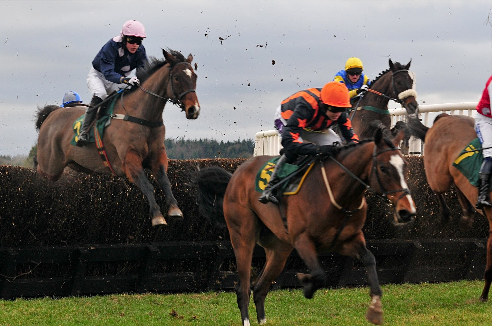

Come What May saca seis cuerpos en el Trigo Stakes y alarga la racha de Lordan en Leopardstown
Come What May respondió como favorito en el Listed Trigo Stakes de Leopardstown al ganar por seis cuerpos a Diego El Queso. Fue la séptima victoria de Wayne Lordan y O'Brien en dos días.

La salida en Leopardstown cotizaba corta y Come What May la justificó en la recta. El potro de tres años, hijo de Nathaniel y hermano entero de Desert Crown, ganador del Derby, dejó a Diego El Queso a seis cuerpos en la llegada.
No corrió a los dos años. Debutó a finales del mes pasado en el Curragh con una victoria que ya apuntaba por encima de la media, y el domingo lo confirmó en su primer Listed.
Wayne Lordan, que lo montó, explicó tras la carrera la paciencia con el caballo: «Es un caballo precioso y nos ha gustado desde que tenía dos años, pero le hemos dado todas las oportunidades porque pensábamos que daría lo mejor de sí a los tres». Sobre la carrera, añadió: «Por cómo salió y cómo galopó, y cómo aceleró hasta la raya, fue bastante impresionante. Creo que la milla y media no será ningún problema para él».
El triunfo redondeó un fin de semana muy productivo para la asociación de Lordan con O'Brien: siete victorias entre las dos jornadas de la reunión, seis de ellas el sábado. «Estoy en la posición afortunada de montar caballos buenos y bien criados, y ayer tuvimos suerte con ellos», resumió el jockey.
La otra prueba Listed del programa, el Bahrain Turf Club Knockaire Stakes, fue para King Cuan, con Billy Lee en la monta. El castrado, hijo de Tasleet, ganó pese a correr con penalización y se anotó su segunda victoria de la temporada, la sexta de su carrera.
Era la primera vez que King Cuan corría sobre algo más de una milla. A principios de este mes había ganado un Listed en el Curragh sobre siete furlongs y en Leopardstown aguantó bien la distancia extra. Por detrás quedó Lewis Carroll, de Aidan O'Brien, que salía a 20/1 con Lordan en la silla.
Por Martín Larrañeta